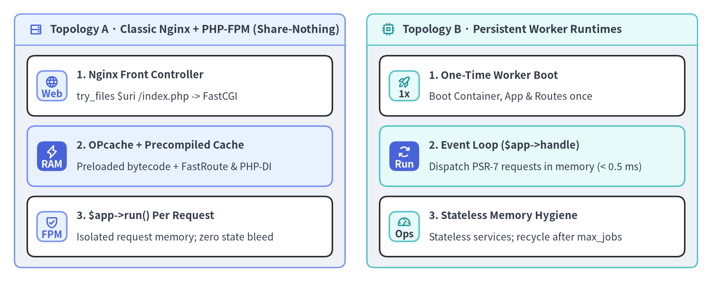
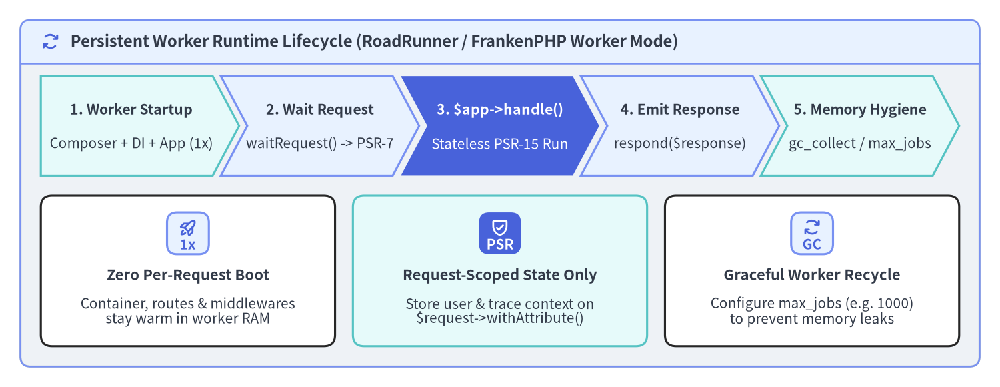

Nginx, PHP-FPM & Worker Runtimes
Slim (v4.15.3) is engineered for minimal runtime overhead in both classic share-nothing Nginx + PHP-FPM deployments and long-running worker runtimes (RoadRunner, FrankenPHP worker mode, and Swoole). Because App::handle(ServerRequestInterface $request): ResponseInterface is completely stateless and PSR-7 immutable, a single booted App instance can safely process thousands of consecutive requests inside a persistent worker loop without re-parsing routes or re-wiring the DI container.

Source Code
from drawlib.canvas import save, setup
from drawlib.icons import phosphor
from drawlib.smartarts import CardList, Panel
from drawlib.styles import Styles
setup(width=196, height=78, dpi=150)
left_panel = Panel(
"Topology A · Classic Nginx + PHP-FPM (Share-Nothing)",
style=Styles.Neutral.patch(shape_r=2.0),
header_style=Styles.PrimaryNeutral.patch(shape_line_width=1.2),
text_style=Styles.DarkBold.patch(text_size=11.0),
icon=phosphor.hard_drives,
icon_style=Styles.PrimaryBold,
header_variant="filled",
header_height=8.5,
)
left_panel.draw((4.0, 4.0), width=91.0, height=70.0)
l_xy, l_w, l_h = left_panel.get_content_box((4.0, 4.0), width=91.0, height=70.0, padding=(3.5, 3.0))
cl_left = CardList(
style=Styles.White,
text_style=Styles.DarkBold.patch(text_size=10.5),
description_style=Styles.Dark.patch(text_size=10.0),
badge_shape="rounded_rect",
badge_style=Styles.PrimaryNeutral,
badge_text_style=Styles.PrimaryBold.patch(text_size=10.0),
icon_style=Styles.PrimaryBold,
direction="vertical",
spacing=2.8,
)
cl_left.add(
"1. Nginx Front Controller",
"try_files $uri /index.php -> FastCGI",
badge_text="Web",
icon=phosphor.globe,
)
cl_left.add(
"2. OPcache + Precompiled Cache",
"Preloaded bytecode + FastRoute & PHP-DI",
badge_text="RAM",
icon=phosphor.lightning,
style=Styles.PrimaryNeutral,
badge_style=Styles.PrimaryFlat,
badge_text_style=Styles.WhiteBold.patch(text_size=10.0),
icon_style=Styles.WhiteBold,
)
cl_left.add(
"3. $app->run() Per Request",
"Isolated request memory; zero state bleed",
badge_text="FPM",
icon=phosphor.shield_check,
)
cl_left.draw(xy=l_xy, width=l_w, height=l_h)
right_panel = Panel(
"Topology B · Persistent Worker Runtimes",
style=Styles.Neutral.patch(shape_r=2.0),
header_style=Styles.SecondaryNeutral.patch(shape_line_width=1.2),
text_style=Styles.DarkBold.patch(text_size=11.0),
icon=phosphor.cpu,
icon_style=Styles.SecondaryBold,
header_variant="filled",
header_height=8.5,
)
right_panel.draw((101.0, 4.0), width=91.0, height=70.0)
r_xy, r_w, r_h = right_panel.get_content_box((101.0, 4.0), width=91.0, height=70.0, padding=(3.5, 3.0))
cl_right = CardList(
style=Styles.White,
text_style=Styles.DarkBold.patch(text_size=10.5),
description_style=Styles.Dark.patch(text_size=10.0),
badge_shape="rounded_rect",
badge_style=Styles.SecondaryNeutral,
badge_text_style=Styles.DarkBold.patch(text_size=10.0),
icon_style=Styles.SecondaryBold,
direction="vertical",
spacing=2.8,
)
cl_right.add(
"1. One-Time Worker Boot",
"Boot Container, App & Routes once",
badge_text="1x",
icon=phosphor.rocket_launch,
)
cl_right.add(
"2. Event Loop ($app->handle)",
"Dispatch PSR-7 requests in memory (< 0.5 ms)",
badge_text="Run",
icon=phosphor.arrows_clockwise,
style=Styles.SecondaryNeutral,
badge_style=Styles.PrimaryFlat,
badge_text_style=Styles.WhiteBold.patch(text_size=10.0),
icon_style=Styles.WhiteBold,
)
cl_right.add(
"3. Stateless Memory Hygiene",
"Stateless services; recycle after max_jobs",
badge_text="Ops",
icon=phosphor.gauge,
)
cl_right.draw(xy=r_xy, width=r_w, height=r_h)
save()
Slim 4 Production Readiness Checklist
Before exposing a Slim 4 service to production traffic, lock in these five build-time and runtime optimizations so PHP never wastes CPU cycles scanning filesystem directories, compiling regex route tables, or reflecting constructor signatures on live requests:
| Optimization Area | Production Configuration / API | Runtime Impact |
|---|---|---|
| 1. Composer Classmap | composer install --no-dev --optimize-autoloader --classmap-authoritative |
Eliminates file_exists() syscalls during PSR-4 class autoloading |
| 2. FastRoute Dispatch Cache | $app->getRouteCollector()->setCacheFile($cacheDir . '/routes.php') |
Skips regex route parsing; loads precompiled FastRoute dispatch array directly from OPcache |
| 3. PHP-DI Container Compilation | $containerBuilder->enableCompilation($cacheDir . '/di') |
Compiles reflection-based auto-wiring into a static factory class |
| 4. Hardened ErrorMiddleware | $app->addErrorMiddleware(displayErrorDetails: false, logErrors: true, logErrorDetails: true, logger: $logger) |
Prevents stack-trace leakage in HTTP responses while preserving full traces in PSR-3 logs |
| 5. OPcache + Bytecode Preload | opcache.validate_timestamps=0, opcache.memory_consumption=256, opcache.jit_buffer_size=64M |
Keeps all Slim, PSR-7, FastRoute, and domain opcodes pinned in shared memory |
Run the following build commands during your CI/CD container image build step:
# 1. Install production dependencies only and build an authoritative classmap
composer install --no-dev --prefer-dist --optimize-autoloader --classmap-authoritative
# 2. Ensure the cache directory exists for precompiled FastRoute & PHP-DI artifacts
mkdir -p var/cache/di var/cache/routes && chmod -R 755 var/cache
Then wire both ContainerBuilder::enableCompilation() and RouteCollector::setCacheFile() in your bootstrap configuration:
<?php
declare(strict_types=1);
use DI\ContainerBuilder;
use Psr\Log\LoggerInterface;
use Slim\Factory\AppFactory;
$isProduction = ($_ENV['APP_ENV'] ?? 'production') === 'production';
$cacheDir = __DIR__ . '/../var/cache';
// 1. Compile PHP-DI container in production to eliminate runtime Reflection overhead
$containerBuilder = new ContainerBuilder();
if ($isProduction) {
$containerBuilder->enableCompilation($cacheDir . '/di');
$containerBuilder->writeProxiesToFile(true, $cacheDir . '/di/proxies');
}
(require __DIR__ . '/../config/dependencies.php')($containerBuilder);
$container = $containerBuilder->build();
// 2. Create Slim App and enable FastRoute dispatch table file caching
$app = AppFactory::createFromContainer($container);
if ($isProduction) {
$app->getRouteCollector()->setCacheFile($cacheDir . '/routes/fastroute.php');
}
(require __DIR__ . '/../config/routes.php')($app);
$app->addBodyParsingMiddleware();
$app->addRoutingMiddleware();
// 3. Never expose displayErrorDetails in production HTTP responses
/** @var LoggerInterface $logger */
$logger = $container->get(LoggerInterface::class);
$app->addErrorMiddleware(
displayErrorDetails: !$isProduction,
logErrors: true,
logErrorDetails: true,
logger: $logger
);
[!WARNING] Because
RouteCollector::setCacheFile()serializes FastRoute's dispatch map into a PHP array file (return [...]), all route handlers must be PSR-11 container class strings (CreateUserAction::class) or[ClassName::class, 'method']pairs—never anonymousClosureinstances, which cannot be exported safely into a route cache file.
Classic Nginx + PHP-FPM & OPcache Configuration
In a standard Nginx + PHP-FPM topology, Nginx serves static assets directly and forwards all other URIs to public/index.php via FastCGI (try_files $uri /index.php$is_args$args;). Pair this with immutable OPcache settings (opcache.validate_timestamps=0) in immutable Docker containers:
# /etc/nginx/conf.d/slim-api.conf
server {
listen 8080;
server_name api.example.com;
root /var/www/app/public;
index index.php;
# Security: hide server version and deny dotfiles
server_tokens off;
location ~ /\. {
deny all;
}
# Route all requests through Slim's front controller
location / {
try_files $uri /index.php$is_args$args;
}
location ~ ^/index\.php(/|$) {
fastcgi_pass 127.0.0.1:9000;
fastcgi_split_path_info ^(.+\.php)(/.*)$;
include fastcgi_params;
fastcgi_param SCRIPT_FILENAME $realpath_root$fastcgi_script_name;
fastcgi_param DOCUMENT_ROOT $realpath_root;
internal;
}
# Return 404 for any other .php file under public/
location ~ \.php$ {
return 404;
}
}
# Recommended /usr/local/etc/php/conf.d/99-production.ini settings:
# opcache.enable=1
# opcache.memory_consumption=256
# opcache.max_accelerated_files=20000
# opcache.validate_timestamps=0
# opcache.jit=tracing
# opcache.jit_buffer_size=64M
# realpath_cache_size=4096K
# realpath_cache_ttl=600
High-Throughput Worker Runtimes (RoadRunner, FrankenPHP & Swoole)
When you need sub-millisecond p99 latency or 5x–10x higher throughput per CPU core, you can run Slim 4 inside a persistent application server such as RoadRunner, FrankenPHP (worker mode), or OpenSwoole. Because App implements PSR-15 RequestHandlerInterface, the worker script boots the DI container, middleware onion, and FastRoute dispatcher once at process startup, and then calls $response = $app->handle($request) inside a while loop for each incoming PSR-7 request:

Source Code
from drawlib.canvas import save, setup
from drawlib.icons import phosphor
from drawlib.shapes import rectangle
from drawlib.smartarts import CardList, ChevronProcess, Panel
from drawlib.styles import Styles
from drawlib.text import text
setup(width=196, height=76, dpi=150)
outer = Panel(
"Persistent Worker Runtime Lifecycle (RoadRunner / FrankenPHP Worker Mode)",
style=Styles.Neutral.patch(shape_r=2.0),
header_style=Styles.PrimaryNeutral.patch(shape_line_width=1.2),
text_style=Styles.DarkBold.patch(text_size=11.5),
icon=phosphor.arrows_clockwise,
icon_style=Styles.PrimaryBold,
header_variant="filled",
header_height=8.5,
)
outer.draw((4.0, 4.0), width=188.0, height=68.0)
proc = ChevronProcess(
style=Styles.White,
text_style=Styles.DarkBold.patch(text_size=10.2),
description_style=Styles.Dark.patch(text_size=10.0),
corner_angle=62.0,
spacing=1.6,
flat_left_end=True,
)
proc.add(
"1. Worker Startup",
description="Composer + DI + App (1x)",
style=Styles.SecondaryNeutral,
)
proc.add(
"2. Wait Request",
description="waitRequest() -> PSR-7",
style=Styles.PrimaryNeutral,
)
proc.add(
"3. $app->handle()",
description="Stateless PSR-15 Run",
style=Styles.PrimaryFlat,
text_style=Styles.WhiteBold.patch(text_size=10.2),
description_style=Styles.White.patch(text_size=10.0),
)
proc.add(
"4. Emit Response",
description="respond($response)",
style=Styles.PrimaryNeutral,
)
proc.add(
"5. Memory Hygiene",
description="gc_collect / max_jobs",
style=Styles.SecondaryNeutral,
)
proc.draw(xy=(8.0, 41.5), width=180.0, height=19.5)
cards = CardList(
style=Styles.White,
text_style=Styles.DarkBold.patch(text_size=10.5),
description_style=Styles.Dark.patch(text_size=10.0),
badge_shape="rounded_rect",
badge_style=Styles.PrimaryNeutral,
badge_text_style=Styles.PrimaryBold.patch(text_size=10.0),
icon_style=Styles.PrimaryBold,
direction="horizontal",
spacing=3.5,
)
cards.add(
"Zero Per-Request Boot",
"Container, routes & middlewares\nstay warm in worker RAM",
badge_text="1x",
icon=phosphor.rocket_launch,
)
cards.add(
"Request-Scoped State Only",
"Store user & trace context on\n$request->withAttribute()",
badge_text="PSR",
icon=phosphor.shield_check,
style=Styles.SecondaryNeutral,
badge_style=Styles.PrimaryFlat,
badge_text_style=Styles.WhiteBold.patch(text_size=10.0),
icon_style=Styles.WhiteBold,
)
cards.add(
"Graceful Worker Recycle",
"Configure max_jobs (e.g. 1000)\nto prevent memory leaks",
badge_text="GC",
icon=phosphor.arrows_clockwise,
)
cards.draw(xy=(8.0, 8.0), width=180.0, height=29.5)
save()
When running Slim 4 in a persistent worker loop, follow three strict statelessness rules:
- Never Store Request State on Singleton Services: Pass per-request data (authenticated user, correlation ID, locale) exclusively through
$request->withAttribute(...), never as mutable properties on DI-managed controllers or middleware instances. - Verify Database Connection Liveness: Long-lived workers keep PDO connections open across requests; enable connection pool health checks or automatic reconnects on idle timeout.
- Configure Graceful Worker Recycling (
max_jobs): Setmax_jobs: 1000(RoadRunner) orMAX_REQUESTS=1000(FrankenPHP) so workers periodically recycle after serving a fixed batch of requests.
<?php
declare(strict_types=1);
// worker.php — RoadRunner PSR-7 worker entry point for Slim 4
use Nyholm\Psr7\Factory\Psr17Factory;
use Spiral\RoadRunner\Http\PSR7Worker;
use Spiral\RoadRunner\Worker;
require __DIR__ . '/vendor/autoload.php';
// 1. Boot the PSR-11 container, Slim App, middlewares, and routes ONCE at worker startup
/** @var \Slim\App<\Psr\Container\ContainerInterface> $app */
$app = require __DIR__ . '/bootstrap/app.php';
$psr17Factory = new Psr17Factory();
$psr7Worker = new PSR7Worker(
Worker::create(),
$psr17Factory,
$psr17Factory,
$psr17Factory
);
// 2. Process incoming PSR-7 requests in memory via $app->handle($request)
while ($request = $psr7Worker->waitRequest()) {
try {
$response = $app->handle($request);
$psr7Worker->respond($response);
} catch (Throwable $e) {
$psr7Worker->getWorker()->error((string) $e);
} finally {
gc_collect_cycles();
}
}
Congratulations on completing the Slim 4 Practical User Guide! You can revisit In-Memory HTTP Testing with PHPUnit, ErrorMiddleware & Custom Renderers, or the Guide Overview at any time, and explore the companion portals for deep technical reference:
- Slim 4 API Reference (
slim.drawlib.com/api/) — Complete class, interface, method, and signature catalog for Slimv4.15.3. - Slim 4 Internal Architecture (
slim.drawlib.com/architecture/) — Deep dive intoApp,MiddlewareDispatcher,CallableResolver, and FastRoute internals. - PNI501 Security & Quality Audit (
slim.drawlib.com/reports/pni501/) — Verification report and static analysis audit of the Slim 4 codebase.